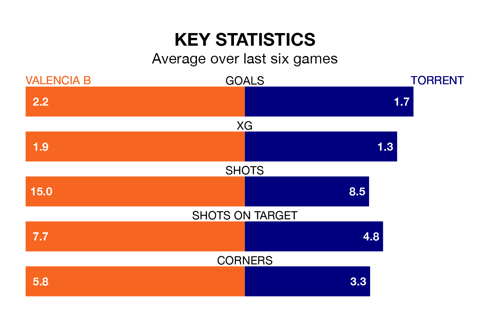

Valencia B host Torrent on Sunday at the Estadio Antonio Puchades in the Segunda División RFEF Group 3.
In their last league match, on April 7, Valencia B lost to Terrassa 1-0 away.
Torrent won, 3-0 at home against SD Formentera.
With 42 goals in 29 games so far this season, Valencia B are scoring more than average in the league with 1.4 goals per game. And they are conceding fewer than average, letting in 32 goals at a rate of 1.1 per game.
Torrent, meanwhile, are average scorers, with 1.2 goals per game. They have conceded 1.1 goals per game.
In the last three years, Valencia B and Torrent have played each other on three occasions. they drew all of them.
Their last meeting was on December 3, when they played out a 0-0 draw.
The away team are eighth in the table after 29 games, of which they have won 12 and drawn six, earning 42 points.
The hosts are one place behind Torrent in ninth, with 11 wins and seven draws putting them on 40 points.
Valencia B are in mixed form in the Segunda División RFEF Group 3, with three wins and a draw from their last six games.
With three wins and three losses over that period, Torrent's form is slightly worse – they have taken nine points from 18, compared to Valencia B's 10.
Updated: 10:01 (UTC), 12/04/24